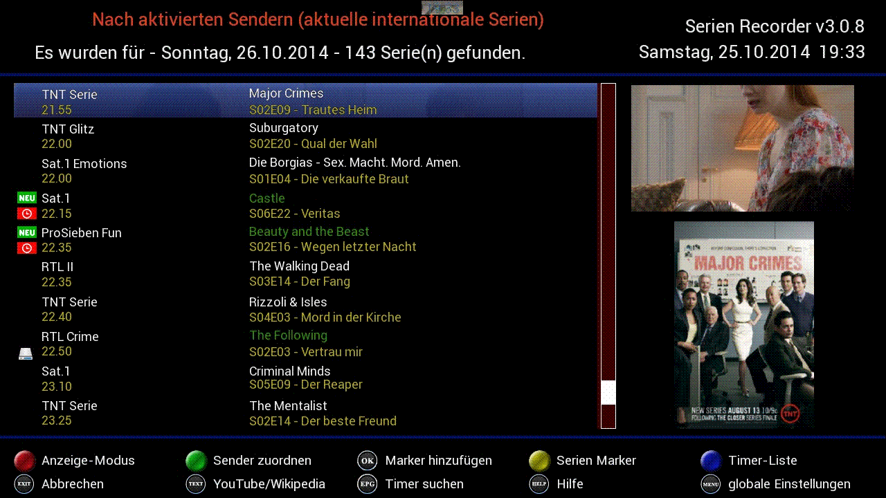

|
2 Der
SerienPlaner
Dies ist die Haupt-Ansicht des
SerienRecorders,
die uns alle Folgen des aktuellen Tages anzeigt, sowie Informationen
für welche Folgen bereits Timer erstellt wurden (Timer-Symbol  ), welche bereits aufgenommen wurden
(Festplattensymbol ), welche bereits aufgenommen wurden
(Festplattensymbol  ), und welche
erstmalig ausgestrahlt werden ( ), und welche
erstmalig ausgestrahlt werden ( ). ).
Mit den Pfeiltasten kann man durch die
Liste blättern, zeilenweise (Pfeil hoch/runter) oder
seitenweise
(Pfeil links/rechts).
Mit den Bouquet Tasten läßt sich zum
nächsten Tag bzw.
wieder zurück blättern (nicht aber zu vergangenen
Tagen).

Fig.2.1: Der SerienPlaner (die Haupt-Ansicht)
Bei
Serien, die für die Timer-Erstellung vorgemerkt sind (ein
entsprechender Serien-Marker ist vorhanden), wird der
Serienname
in grüner
Farbe angezeigt, alle anderen in weiß.
Wurde bei einer Serie, für die noch kein Marker
existiert,
eine Folge mit der Nummer 1 (d.h. Beginn einer neuen Serie oder
Staffel) gefunden, so wird Der Serienname bei dieser Folge in roter Farbe
dargestellt. Das erleichtert das intuitive Erkennen, dass eventuell ein
neuer Marker angelegt werden soll.
2.1
Der Anzeige-Modus
Über
den Anzeige-Modus lässt sich
einstellen welche Serien im Hauptbildschirm anzeigt werden sollen.
Sinnvoll ist eine der Einstellungen die die Anzeige auf die
aktivierten Sender beschränkt.
 Fig.2.2
Der Anzeige-Modus
Fig.2.2
Der Anzeige-Modus
2.2
Die Sender-Zuordnung 
Damit der
SerienRecorder überhaupt
funktioniert, müssen Sender zugewiesen werden. Wie das
funktioniert ist im nächsten
Kapitel beschrieben.
2.3
Die Serien-Marker  
Damit eine Serie beim Suchlauf (Auto-Check) einbezogen werden
kann, muss für diese Serein ein sogenannter Marker erstellt
werden. Die einfachste Methode ist, den Marker direkt aus der
SerienPlaner-Ansicht zu erstellen. Dafür genügt es,
die
gewünschte Serie auszuwählen und die OK
Taste zu drücken. Die gewählte Serie wird zu den
Serien-Markern hinzugefügt, und die Serien-Marker-Ansicht
öffnet sich (s. Kapitel
4), um alle Einstellungen für den neuen Marker
vornehmen zu können. Mit der gelben
Taste gelangt man direkt in die Serien-Marker-Ansicht.

2.4 Die Timer 
Mit der blauen Taste gelangt man in die Timer-Liste (s. Kapitel 5), die alle vergangenen und zukünftigen Timer beinhaltet.
|